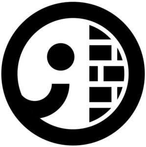

Trade Mark Journal No.2025/040 3 October 2025
WO0000001779974 (28,35,41)
Office of origin: France
Date of International Registration:2 November 2023
Date of designation in the UK:
2 November 2023

International priority date claimed: 24 May 2023
(France)
(4964014)
- Class 28
- Games, toys; gymnastic and sports articles not included in other classes; racket cases, balls for games, balls for playing, tennis balls, shuttlecocks for badminton, strings for rackets, nets [sports articles], tennis nets, badminton nets, nets for table tennis tables, tennis ball throwing apparatus, elbow guards [sports articles], knee guards [sports articles], shin guards [sports articles], rackets, tennis rackets, badminton rackets, table tennis rackets, padel rackets, beach rackets, table tennis tables, squash rackets, vibration dampeners for tennis rackets, grips for rackets.
- Class 35
- Advertising; business management of companies; administrative work; retail (or wholesale) services and retail services provided on all connected (the Internet), mobile, wireless or remote (mail-order, teleshopping) media supports for clothing, clothing accessories, footwear, footwear accessories, headwear, optical products and accessories, sports articles and equipment, multi-function sports bags, sports and fitness articles and accessories; bringing together for the benefit of third parties various products (excluding the transport thereof), namely clothing, clothing accessories, footwear, footwear accessories, headgear, optical products and accessories, sports articles and equipment, multi-functional sports bags, sports and fitness articles and accessories, enabling clients to view and buy them in a practical manner; presentation for retail sale, on all communication media, of clothing, clothing accessories, footwear, footwear articles, headgear, optical goods and accessories, sports articles and equipment, multi-functional sports bags, sports and fitness goods and accessories; marketing activities; publication of advertising texts; inserting printed matter into envelopes (direct mail advertising); presentation of products services; commercial promotion for third parties; commercial information and advice for consumers (consumer advice shop); administrative processing of orders; promotional services for third parties by means of customer loyalty programs, customer loyalty services featuring or not featuring the use of a card; organization of exhibitions and sports articles tests for commercial or advertising purposes; personnel recruitment.
- Class 41
- Education; training; entertainment; sporting and cultural activities.
DECATHLON
Representative: Monsieur DESCHAMPS François TMARK CONSEILS, 9 avenue Percier, F-75008 Paris, FRANCE